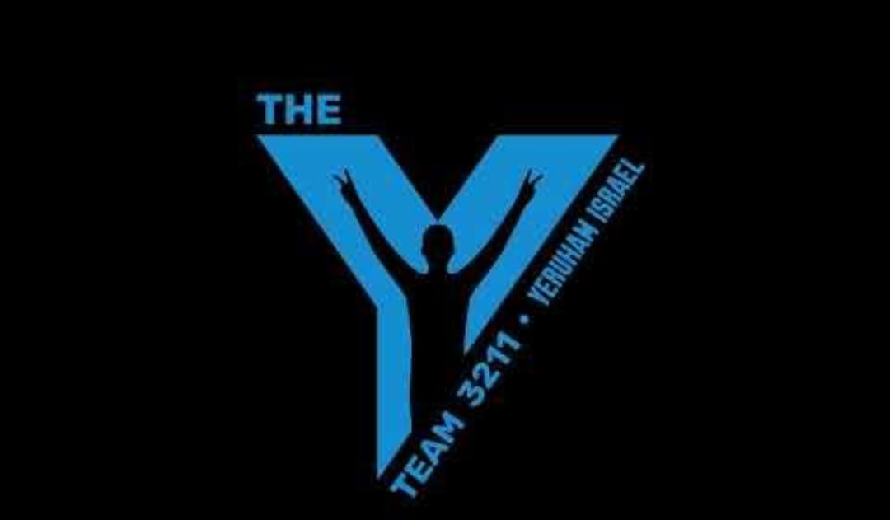

This repository is dedicated to training new programmers on the Y-Team.
The curriculum is divided into three major chapters:
If you are already proficient in Java, you may skip to Chapter 1.2.1 Git Start. "Proficiency" implies a strong understanding of Object-Oriented Programming (OOP), Interfaces, Runnables, Consumers, and Suppliers.